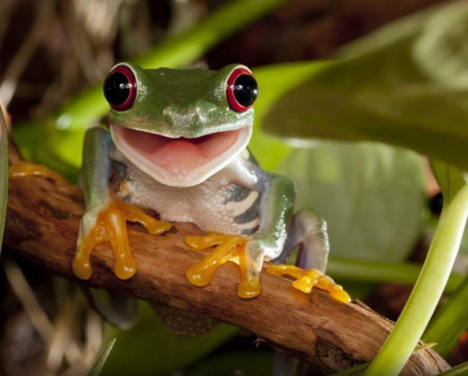

Anuros
Os anuros são uma das três ordens principais da classe dos anfíbios. Seu nome, derivado do grego, significa "sem cauda", característica que define esses animais na fase adulta. O grupo inclui sapos, rãs e pererecas, que são amplamente
distribuídos pelo mundo e apresentam uma enorme diversidade de espécies. Esses animais desempenham papéis
ecológicos essenciais, além de possuírem características únicas que os tornam fascinantes para o estudo da
biologia.
Os anuros têm um corpo compacto e robusto, adaptado para o salto e a natação. Eles não possuem cauda na fase
adulta, e suas patas traseiras são longas e musculosas, enquanto as dianteiras são menores, auxiliando no
equilíbrio. Seus olhos grandes e posicionados lateralmente oferecem um campo de visão amplo, importante para
detectar presas e predadores. A pele dos anuros é fina, úmida e permeável, o que facilita as trocas gasosas
e os torna dependentes de ambientes úmidos. Além disso, muitas espécies possuem glândulas que secretam
substâncias tóxicas ou desagradáveis, como mecanismo de defesa.

Perereca-de-olho-vermelho
Anfíbio natural das florestas da América do Sul.
A respiração dos anuros ocorre tanto pela pele quanto pelos pulmões, sendo a respiração cutânea crucial para
a sobrevivência em ambientes aquáticos. Eles são conhecidos por seu ciclo de vida peculiar, que inclui a
metamorfose. Os ovos são depositados em ambientes aquáticos ou úmidos, eclodindo em girinos, que possuem
cauda e brânquias. Durante a metamorfose, os girinos perdem a cauda e desenvolvem pulmões e membros,
tornando-se adultos terrestres. A dieta também muda ao longo do ciclo de vida: enquanto os girinos podem ser
herbívoros ou detritívoros, os adultos são carnívoros e se alimentam de insetos, aranhas e outros
invertebrados.
Com mais de 7.000 espécies descritas, os anuros exibem uma enorme diversidade. Sapos, como o sapo-cururu
(Rhinella marina), têm corpos robustos e pele seca e rugosa, frequentemente associada à produção de toxinas.
As rãs, como a rã-touro-americana (Lithobates catesbeianus), possuem pele lisa e úmida, além de grande
habilidade para nadar e saltar. Já as pererecas, como a perereca-de-vidro (Hyalinobatrachium fleischmanni),
são leves e têm discos adesivos nos dedos, que facilitam a escalada em árvores e folhas. Essa diversidade
permite que os anuros ocupem habitats que variam de florestas tropicais úmidas a desertos áridos.
Os anuros desempenham papéis ecológicos cruciais. Como predadores de insetos, ajudam a controlar pragas e
manter o equilíbrio ecológico. Sua sensibilidade às mudanças ambientais, como poluição e desmatamento, os
torna indicadores importantes da saúde dos ecossistemas. Além disso, eles servem como presas para muitos
predadores, como aves e répteis, e, ao mesmo tempo, são predadores importantes de invertebrados,
integrando-se de maneira fundamental à cadeia alimentar.
Apesar de sua importância, os anuros enfrentam diversas ameaças, como perda de habitat, poluição e mudanças
climáticas. Doenças, como a quitridiomicose, causada por fungos, têm dizimado populações em várias partes do
mundo. Ações de conservação, como a criação de áreas protegidas, combate à poluição e programas de
reprodução em cativeiro, são essenciais para preservar essas espécies e garantir a manutenção dos serviços
ecológicos que elas proporcionam.